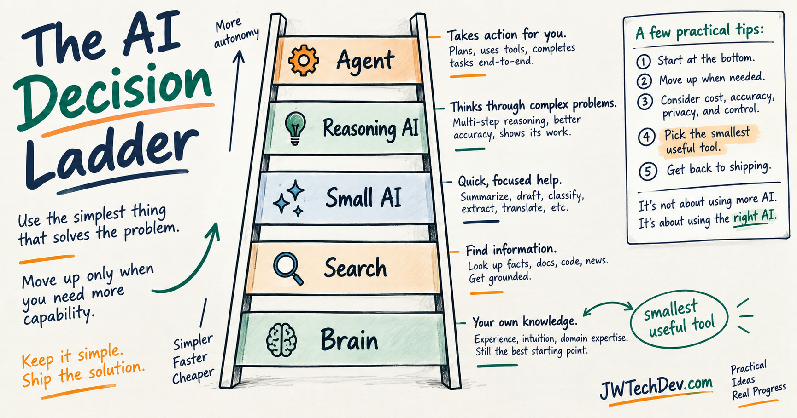

When should you use AI instead of Google or your own brain?
AI literacy is not using AI for everything. It is knowing whether the task deserves your own judgment, search, a lightweight model, a reasoning model, or a full workflow with tools and approval.

Quick answer
Use your brain for judgment, values, taste, and decisions where you need to build your own discernment.
Use search when the answer depends on current facts, official sources, local information, pricing, release notes, documentation, or anything that can change.
Use a lightweight AI model for low-risk cleanup work like summarizing, rewriting, extracting, formatting, and brainstorming.
Use a stronger reasoning model when the task has ambiguity, tradeoffs, code, architecture, strategy, or consequences.
Use an agent workflow only when the work repeats, needs tools, needs memory, and needs a clear human approval gate.
The responsible rule is simple: use the smallest useful tool.
The problem: people are using AI like a reflex
AI is powerful, but a lot of people are starting to treat it like the default answer to every question. That is not AI literacy. That is tool confusion.
If you ask a large model to answer something you already know, you may save five seconds but lose the habit of thinking. If you ask a model something that depends on current facts without checking sources, you may get a confident answer that is stale or wrong. If you send every tiny task to the biggest model available, you may be wasting cost, time, and compute.
The goal is not to shame people for using AI. The goal is to use it on purpose.
The AI decision ladder
A clean way to think about this is a ladder. Each rung is a tool choice. Do not start at the top. Start at the lowest rung that can responsibly solve the task.
Rung 1: Use your brain
Use your own brain when the task is really about judgment: Do I agree with this? What do I actually want? Does this sound like me? What is the ethical move here? What am I willing to be responsible for?
AI can help you reflect, but it should not replace the part where you develop judgment. Judgment is a muscle. If you outsource every small decision, you may become faster at prompting but weaker at deciding.
Use AI to challenge your thinking, not to avoid having any.
Rung 2: Use search
Use search when the answer depends on current or source-specific truth: product pricing, store hours, official API limits, AWS service release notes, documentation syntax, recent news, local regulations, company policies, or a public source you need to quote accurately.
Search is still useful because it gets you closer to the source. AI can summarize, compare, and explain sources, but if the answer has to be true today, you need a source trail.
For builders, this matters even more. If you are writing about cloud services, AI platforms, model releases, security guidance, or pricing, source-first habits protect your credibility.
Rung 3: Use a lightweight AI model
Use a small, fast, cheaper model when the task is low-risk and structured: summarize this article, turn these notes into bullets, rewrite this caption, extract action items, classify messages, clean up a transcript, or make a rough email easier to read.
This is where people often overuse the biggest model they have. You usually do not need a heavyweight reasoning model to clean up a paragraph or summarize a short article.
This is also the most practical environmental habit: do not use more compute than the job needs.
Rung 4: Use a reasoning model
Use a stronger reasoning model when the task has moving parts: compare two career paths, debug a strange issue, review a cloud architecture, build a study roadmap, evaluate tradeoffs, find holes in an argument, or think through failure modes.
This is where AI is doing more than formatting words. It is helping you reason across constraints.
A better prompt sounds like this: Here is my goal, here are the constraints, here are the options I see, here is what matters most, and here is what I am worried about. Compare the tradeoffs and tell me what I might be missing.
Rung 5: Use an agent workflow
Use an agent when the work repeats and needs tools. For example: every week, collect public sources, draft a blog outline, create a TikTok script, make an image brief, and wait for human approval.
Agents are not just AI but cooler. Agents are workflows. That means they need boundaries: what data can it read, what tools can it call, what is it allowed to write, what actions require approval, what gets logged, what happens when it fails, and who owns the result.
This is why AI eventually becomes a cloud and infrastructure conversation. Once AI can touch tools, data, systems, or people, the workflow around the model matters as much as the model itself.
The environmentally conscious AI rule
AI runs on real infrastructure: chips, power, cooling, networks, data centers, and supply chains.
The exact environmental impact of a prompt depends on the provider, model, workload, data center, energy source, cooling design, and measurement method. Some providers are also making rapid efficiency gains.
So the point is not to pretend every prompt is equally bad. The point is to avoid waste. Use the smallest useful tool: brain for judgment, search for current truth, lightweight model for cleanup, reasoning model for tradeoffs, and agents for repeated tool workflows.
How to choose which model to use
Start small when the work is low-risk and easy to verify. Use your normal daily-driver model when the task needs useful thought but not deep strategy. Escalate to a reasoning model when the task has consequences, ambiguity, multiple constraints, or expensive failure modes.
Use the biggest model only when the value justifies it: high-value strategy, complex technical design, dense source material, long-horizon work, or problems where smaller models already failed.
Use an agent only when there is a repeatable workflow. If the task is one-and-done, you probably do not need an agent. If the task happens again and again with the same pattern and decision points, it may be agent-shaped.
For patients and other high-stakes users
If the topic is medical, legal, financial, safety-related, or can affect someone else's life, slow down.
For a patient, AI can help prepare a symptom timeline, organize questions, summarize information you provide, or help you get ready for a clinician conversation. It should not replace a medical professional or become the final authority.
The same pattern applies to legal and financial decisions. AI can help you prepare, but qualified humans and authoritative sources still matter.
The practical checklist
Before you use AI, ask: Is this actually a thinking task, or do I already know the answer? Is this a current-fact task that needs search or official sources? Is this low-risk cleanup that a small model can handle? Does this require deeper reasoning and tradeoff analysis? Is this repeated work that deserves an agent workflow? What would happen if the answer is wrong?
Then ask the most important question: what is the smallest useful tool?
Sources checked
Want the starter kit?
Grab the free JWTechDev.com starter kit if you want a practical way to connect cloud basics, AI workflows, and approval gates.
Get resources